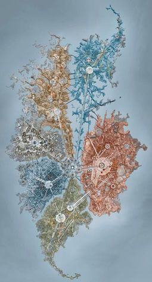
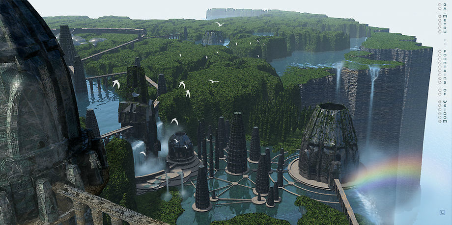
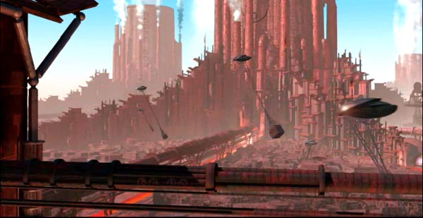
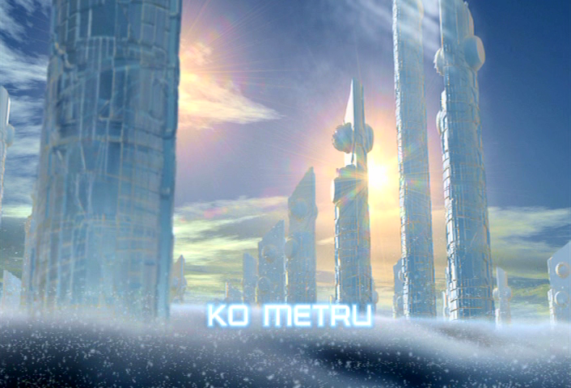
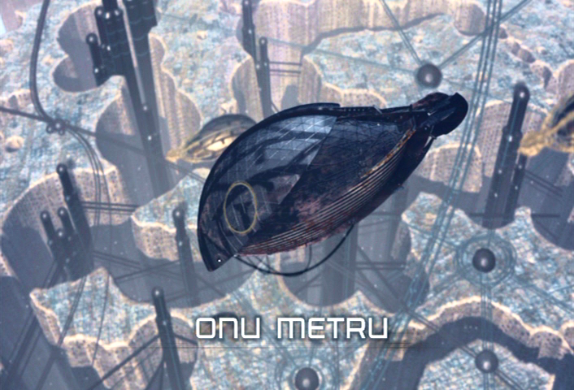
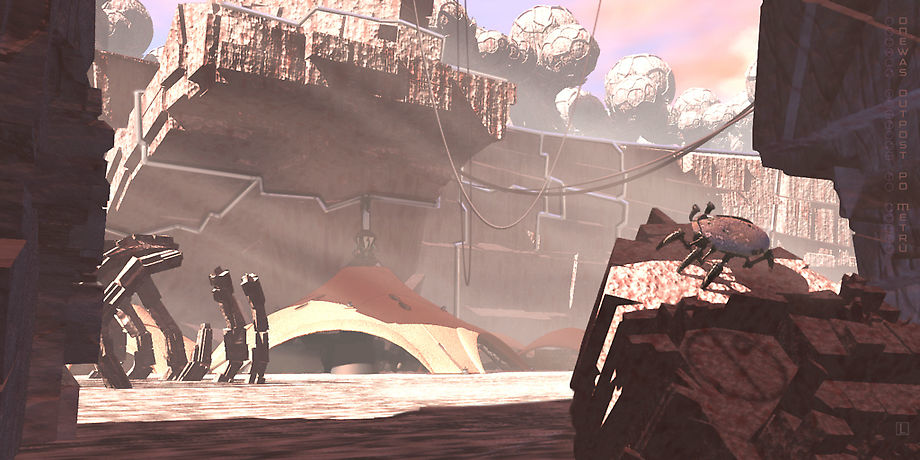
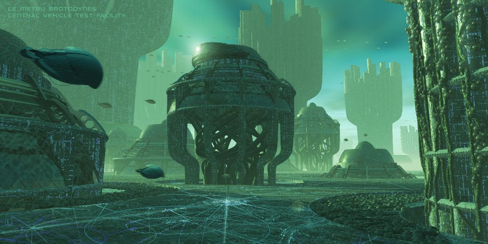

Metru Nui

Metru Nui (literally translated as "Great City") was a city great metropolis floating on a sea of liquid protodermis. It was known as the City of Legends and can be considered the most central location in the Matoran Universe.
The city is slightly smaller than the island of Mata Nui, about 2 145 square kilometres. It is divided into six regions or "metrus"; Ga-Metru, Ta-Metru, Le-Metru, Po-Metru, Onu-Metru and Ko-Metru.
During much of its existence it was guarded by the Vahki: mechanical order enforcement units which main purpose was to maintain order, to defend the city from Rahi rampages and to make sure Matoran worked when they were scheduled to do so.
Ga-Metru; home of scholars and scientists
Ga-Metru - home to the Ga-Matoran - is the district of Water in Metru Nui. It serves as the city's spiritual and educational center. The district is adorned with temples, schools and Fountains of Wisdom - Liquid Protodermis fountains.
Of all the significant locations the Great Temple is by far the most important one. At the center of the temple is a Suva - a shrine dedicated to Toa which has the power to transform Matoran into Toa.

Ta-metru; the industrial center
Ta-Metru is where molten Protodermis is fashioned into various tools, Kanohi masks and Kanoka. The district is filled with factories, foundries and Fire Pits - large pits that maintain the hot temperatures which typically only Ta-Matoran can handle.

Ko-Metru; the quiet metru
Ko-Metru - the ice region of Metru Nui - is where Ko-Matoran study, observe and look into the future by researching prophevies and reading the stars above Metru Nui. Ko-Metru is also home to the Knowledge Towers, large crystalline structures which are the prime workplaces for Ko-Matoran scholars.

Onu-Metru; archives and mines
Onu-Metru is home of the archivists and miners. Blocks of solid Protodermis would be extracted from the mines and shipped to Po-Metru for carving. The district is best known, however, for the legendary Archives. The Archives is a large museum complex underneath Onu-Metru which preserves every Rahi the Matoran have encountered to be studied as well as various artifacts, like ancient Matoran tools and carvings.

Po-Metru; the center of goods
Unlike other metrus, Po-Metru is a wild and barren place with mountains and canyons scattered about. It is home of the carvers and builders in Metru Nui. Po-Matoran mainly labor out of doors, assembling goods and carving statues.

Le-Metru; vehicles and transportation
Le-Metru is where all ground and air vehicles as well as chutes are manufactured. Chutes are a method of transportation made of magnetized Protodermis flowing at rapid speeds. The district is known for its feeling of barely controlled chaos as workers scramble to and for beneath a canopy of wires and cables.
